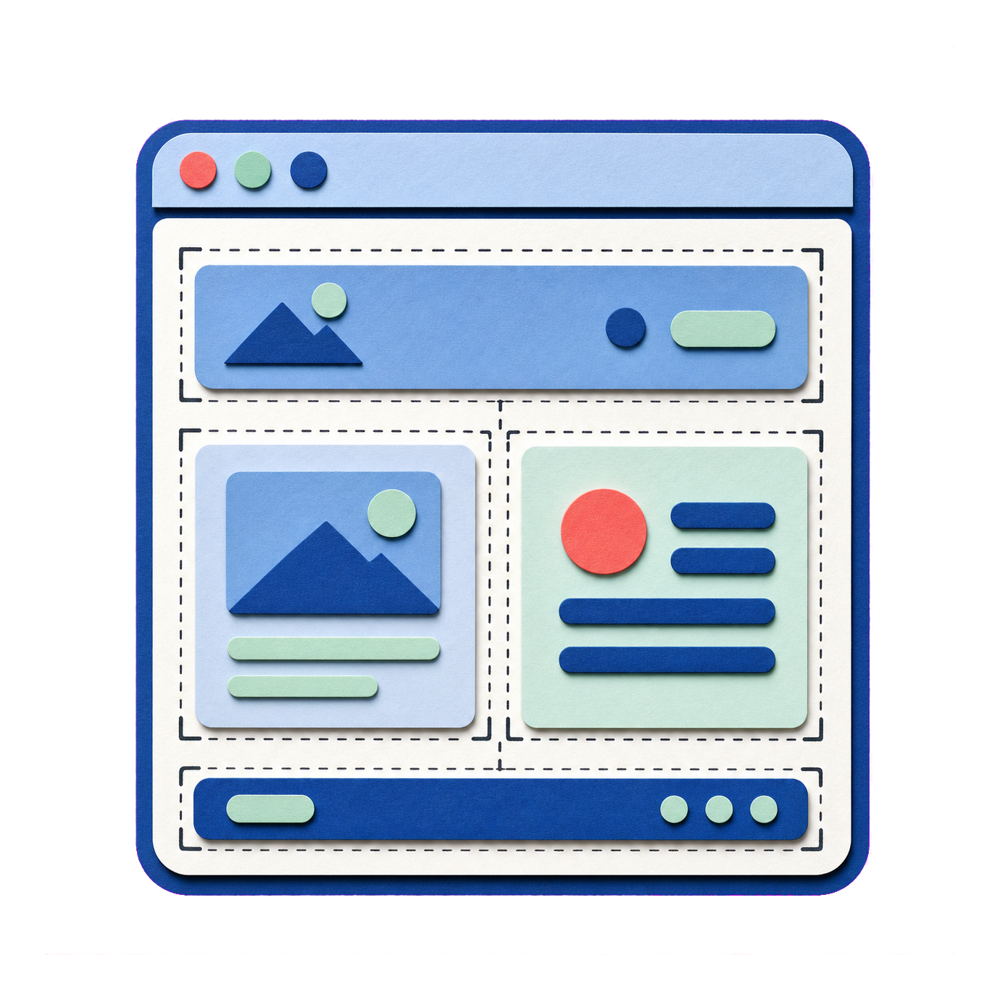
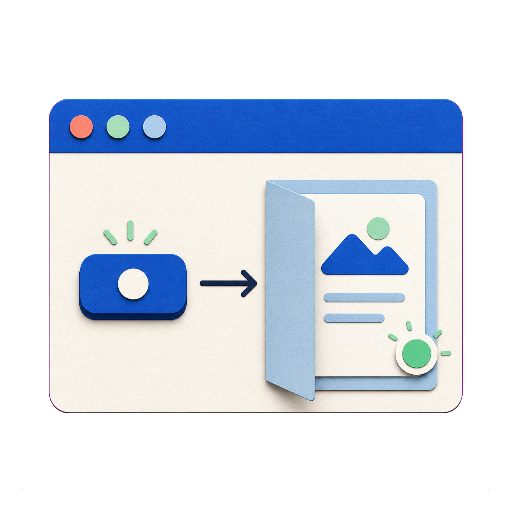

1주차
요청하고, 확인하고, 고치기
index.html을 열고 내 소개가 보이는지 확인한 뒤 한 곳을 바꿉니다.

비전공자가 AI 코딩 에이전트와 함께 아이디어를 화면으로 만들고, 직접 확인하고 고쳐서, 인터넷에 공개하기까지
3주 전체 여정
1주차
index.html을 열고 내 소개가 보이는지 확인한 뒤 한 곳을 바꿉니다.

2주차
누구의 문제를 풀지 정하고 꼭 필요한 기능만 첫 제품으로 만듭니다.

3주차
만든 결과를 웹에 공개하고 반응을 확인해 고친 뒤 다시 공개합니다.
오늘의 목표
수업이 끝나면 내 작업물을 열어 결과를 확인할 수 있습니다.

서로 다른 역할

대화가 길어지면 중요한 조건을 다시 적습니다. AI가 작성해도 최종 결정은 사람에게 있습니다.
어디에 쓰는 도구인가?
질문하고 생각을 정리하며 초안을 만듭니다.
자료를 묶어 긴 작업과 산출물을 정리합니다.
현재 폴더 안의 실제 파일을 읽고 만들고 고칩니다.

브라우저에 보이는 화면
프론트엔드는 사용자가 브라우저에서 직접 보고 누르는 화면을 만드는 영역입니다.

제목·문장·이미지처럼 내용의 구조를 세웁니다.
비유 집의 뼈대처럼 무엇이 어디에 놓일지 정합니다.

색·글자·여백·배치를 보기 좋게 꾸밉니다.
비유 옷과 인테리어처럼 화면의 인상을 만듭니다.

클릭 같은 행동에 화면이 반응하게 만듭니다.
비유 스위치처럼 행동을 화면의 변화로 연결합니다.
세 단어를 구분하기

파일 탐색기에서 시작

시작 위치
C:\가 보이는지 확인합니다.문서나 다운로드 폴더가 아니라 로컬 디스크(C:)를 직접 엽니다. 여기서 오늘 사용할 기준 폴더를 만들면 위치를 다시 찾기 쉽습니다.
확인 기준 · 왼쪽 탐색창과 주소 표시줄 모두에 C:가 보입니다.
행동하기 때문에 더 조심

한 번 고칠 때의 흐름

한 줄 소개만 고치기
한 줄 소개만 [새 문장]으로 바꿔 달라고 말합니다.
이름·관심사·나머지 구성은 그대로 유지해 달라고 덧붙입니다.
브라우저에서 새 문장 하나와 이전 구성의 유지 여부를 함께 봅니다.

원하는 한 가지를 더 바꾼 뒤
통째로 복제하지 않고 앞의 팔레트에서 특징 하나만 골라 내 식으로 바꿉니다.
고른 특징 하나만 바꾸고, 내 내용과 구조는 그대로 둔다고 적습니다.
필수 내용과 읽기 쉬움이 맞으면 현재 결과를 남기고 무엇을 확인했는지 기록합니다.

무엇이 다른지 먼저 가르기
같은 ‘안 됨’처럼 보여도 원인이 다르면 다음 행동도 다릅니다.
오류입니다. 파일 위치·이름·저장·새로고침을 차례로 확인합니다.
요구 불일치입니다. 빠진 조건 하나만 다시 말합니다.
취향 차이입니다. 색·글자·여백 중 원하는 특징 하나를 고릅니다.

다음 시간
요청 → 확인 → 수정의 흐름은 다음 주에도 그대로입니다.